Operating Documentation
Direction 5193755-800, Rev# 8
BrightSpeed (Ltd. Access) Service Methods - Adv
Operating Documentation |
This section provides LED, switch, connector, and fuse information for the X-Ray Generation Subsystem.
All Test Points and LEDs are easily accessible and clearly labeled. Standard color coding of LEDs shall be used:
RED for hazard / fault conditions
GREEN for OK status conditions
YELLOW for other conditions
| NOTE: | Related Topic: Power-On Sequence Theory. |
The LED display status offers useful visual feedback which can help to enable error-code based troubleshooting. Whenever in doubt, a useful first step is to look at the LED status display on the PPC kV control board, then check the LEDs on the LVPS400, Rotation, and Heater boards.
The LEDs indicating the status are the yellow LEDs, DS17 to DS24 on PPC kV control board. For the location of these LEDs, see the PPC kV Control Board block diagram in Illustration 6.
In the figures below, means LED ON and, 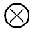
Illustration 1: DS17 through DS24
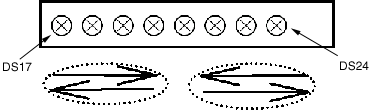
Power On self tests: LEDs DS17 to DS24 are lit successively several times very fast.
Application mode: LEDs DS17 to DS24 are lit successively more slowly. The power up self tests are completed, PPC kV control board is up and running.
Illustration 2: DS17 through DS24

Half of the 8 LED are lit: After the download of the boot this indicates that the PPC kV control board is erasing the flash memory and preparing for the download of the application. When these tasks are done, the four LEDs on the right will be lit as shown in the following figure.
Illustration 3: DS17 through DS24

Half of the 8 LED are lit: Normal after the download of the boot. This can also indicate a corrupt software problem or database checksum problem. In case of software problem communication with the generator will not be possible. Try to download again the software or replace PPC kV CTRL board. In case of database problem, an error code is logged and communication with the generator is possible. Refer to error code description.
Illustration 4: DS17 through DS24
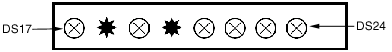
When an application error occurs, LEDs blink indicating the simplified error code in binary code. When the error is cleared, the 8 LEDs are lit successively.
After the power on diagnostics, heater board LEDs DS1 and DS2 are lit successively. Refer to block diagrams for complete explanation of LED indication on this board. Any different status corresponds to an abnormal situation. An error code is logged. Refer to error code description.
| NOTE: | See block diagrams. |
After the power on diagnostics, rotation board LED DS5 is blinking. Refer to block diagrams for complete explanation of LED indication on this board. Any different status corresponds to an abnormal situation. An error code is logged. Refer to error code description.
| NOTE: | See block diagrams |
After the power on diagnostics, LVPS400 board LEDs DS3 and DS4 are lit successively. Any different status corresponds to an abnormal situation. An error code is logged. Refer to error code description.
Illustration 5: CT-IF-V4 Board
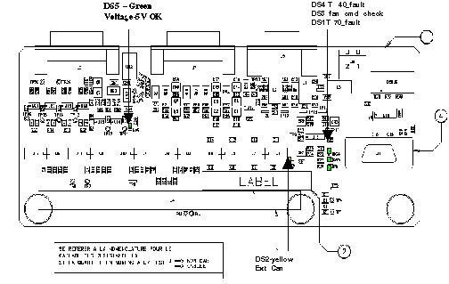
| NOTE: | For a larger version of the above illustration, click on the pdf icon below: |
Media File 1: CT-IF-V4 Board

Table 1: CT-IF-V4 Board Connectors Definition
| J1 | Not used (only eng: int CAN debug) |
| J3 | CAN to System - ORP, and RTLs |
| J4 | To PPC kV Ctrl Board |
| J5 | KV-mA analog feedback to DAS |
| J6 | +15V Supply / To LVPS400 board |
| J7 | To Power Interface board (System) |
Illustration 6: PPC KV Control V2 Board
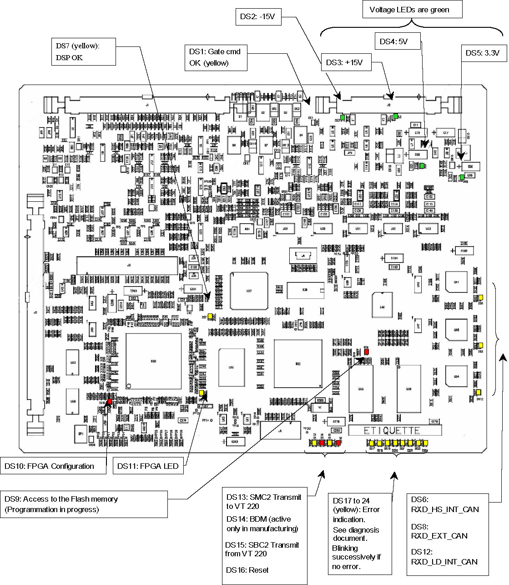
| NOTE: | For a larger version of the above illustration, click on the pdf icon below: |
Media File 2: PPC KV Control V2 Board

Table 2: PPC KV CONTROL V2 Board Connectors Definition
| J1 | From HV tank (digital & analog signals). |
| J2 | Internal CAN (to auxiliaries units) |
| J3 | To CT IF board (digital signals) |
| J4 | Not equipped |
| J5 | TEST/ Engineering use only |
| J6 | BDM/ Engineering use only |
No switches and jumpers are installed on this board.
Table 3: Indicators
| INDICATOR | COLOR | INDICATES: |
|---|---|---|
| DS1 | Yellow | Inverter gate power supply ok (GATE CMD BOARD OK) |
| DS2 | Green | -15V SUPPLY |
| DS3 | Green | +15V SUPPLY |
| DS4 | Green | +5V |
| DS5 | Green | +3.3V |
| DS6 | Yellow | RXD_HS_INT_CAN: COMMUNICATION WITH Heater and ROTOR Boards |
| DS7 | Yellow | ON WHEN DSP IS OK (in user mode) |
| DS8 | Yellow | RXD_EXT_CAN: EXTERNAL COMMUNICATION WITH SYSTEM |
| DS9 | Red | ACCESS to the Flash memory (Programation in progress)ON WHEN FLASH IS BEING PROGRAMMED |
| DS10 | Red | Field programmable gate array (FPGA) configuration not accomplished |
| DS11 | Yellow | FPGA LED |
| DS12 | Yellow | NOT A DIAGNOSTIC LED. NOT APPLICABLE TO JEDI60DC |
| DS13 | Yellow | SMC2 Transmit to VT 220 |
| DS14 | Red | BDM (active only in manufacturing) |
| DS15 | Yellow | SMC2 Transmit from VT 220 |
| DS16 | Red | board being reset |
| Ds17 to Ds24 | Yellow | STATUS LED in application mode these leds flash in sequence continuously |
| ELECTROCUTION HAZARD. | |
| HIGH VOLTAGE PRESENT. | |
| Do not touch the board UNTIL DS300 on this board and DS1 on the Dual Snub board go out. |
| BURN HAZARD. | |
| THE SURFACE ON TRANSFORMER T300 AND HEAT SINK CAN BECOME VERY HOT. | |
| Do not touch the transformer or heat sink. |
Illustration 7: GATE CMD Board
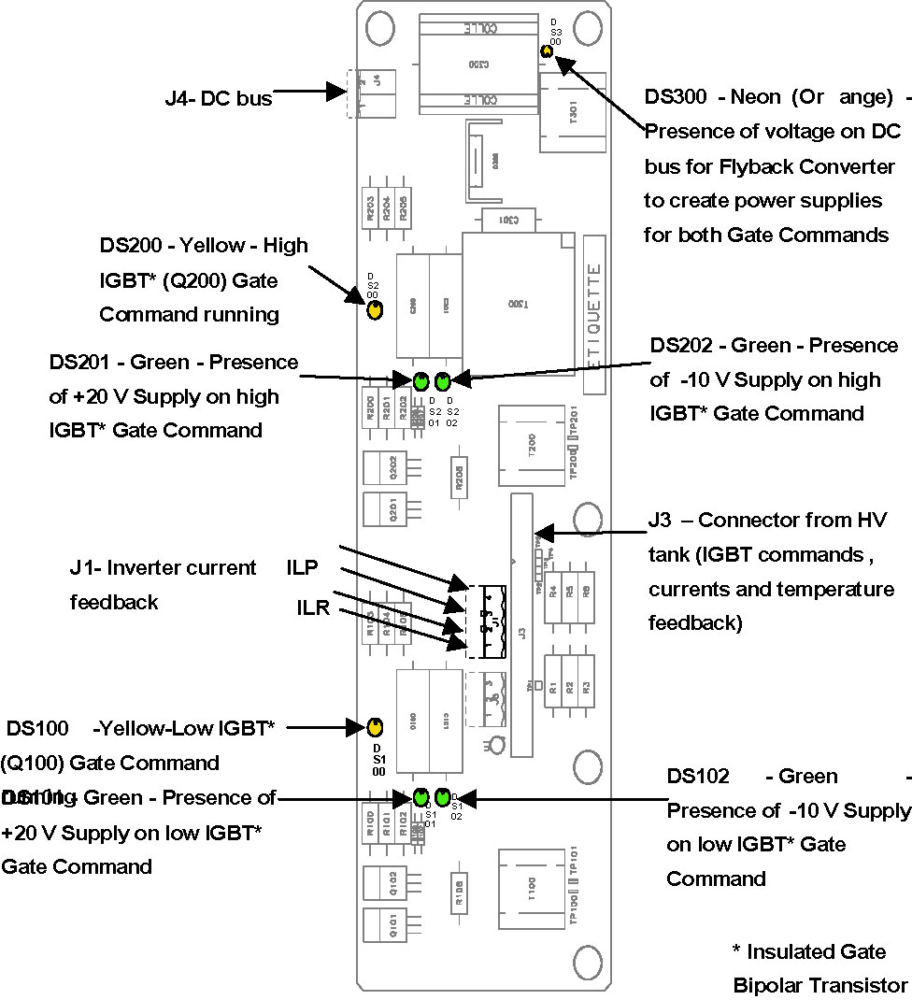
| NOTE: | For a larger version of the above illustration, click on the pdf icon below: |
Media File 3: GATE CMD Board

Illustration 8: (Other possible GATE CMD board)
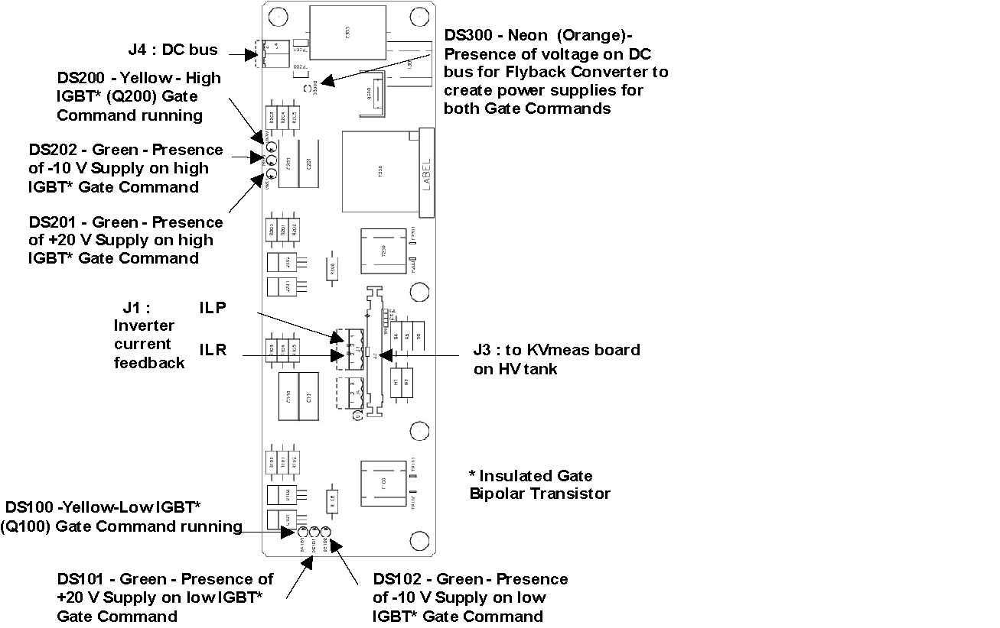
| NOTE: | For a larger version of the above illustration, click on the pdf icon below: |
Media File 4: (Other possible GATE CMD board)

| This board forms part of the oil seal of the High Voltage Tank. It can only be removed at the factory. The Field Replaceable Unit (FRU) is the complete HV Tank. | |
Illustration 9: KV_MEASURE Two Tubes Board
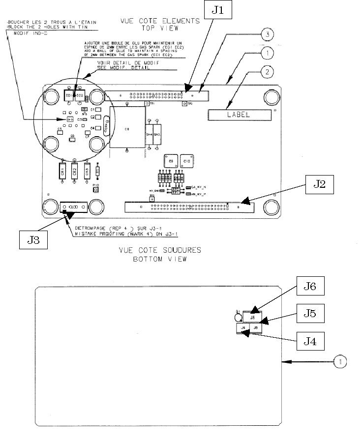
| NOTE: | For a larger version of the above illustration, click on the pdf icon below: |
Media File 5: KV_MEASURE Two Tubes Board

Table 4: KV MEAS (standard) Board Connectors Definition
| J1 | To Gate Command board |
| J2 | From kV Ctrl board |
| J3 | Filament currents input (to heat transformer)1: Small Filament; 2: common; 3: Large Filament; 4: N.U. |
| J4 | Internal connector / To HV Tank |
| J5 | HV tank internal connector (not accessible) / To HV Tank |
| J6 | Internal connector,/ To HV Tank |
| ELECTROCUTION HAZARD. | |
| HIGH VOLTAGE PRESENT. | |
| Do not go into generator until indicator DS1 and DS3 go out. |
Illustration 10: HEATER V6B Board
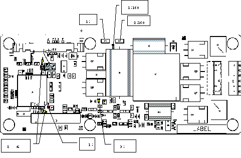
| NOTE: | For a larger version of the above illustration, click on the pdf icon below: |
Media File 6: HEATER V6B Board

Table 5: Heater V6 Board Connectors Definition
| J1 | Internal CAN and +/-15V supplies |
| J2 - J4 | Heat current output |
| J3 | TEST/ For engineering use only |
| ELECTROCUTION HAZARD. | |
| HIGH VOLTAGE PRESENT. | |
| Do not go into generator until indicator DS6 and DS7 (neon-orange) go out. |
Illustration 11: Rotation Board

| NOTE: | For a larger version of the above illustration, click on the pdf icon below: |
Media File 7: Rotation Board

Table 6: ROTATION Board Connectors Definition
| J1-J1A | Internal CAN and +/-15V supplies |
| J2 | 40°C-70°C safeties, fan/chiller supplies |
| J3 | Stator currents and DCBUS |
| J7 | For engineering use only |
Illustration 12: J2 Wiring
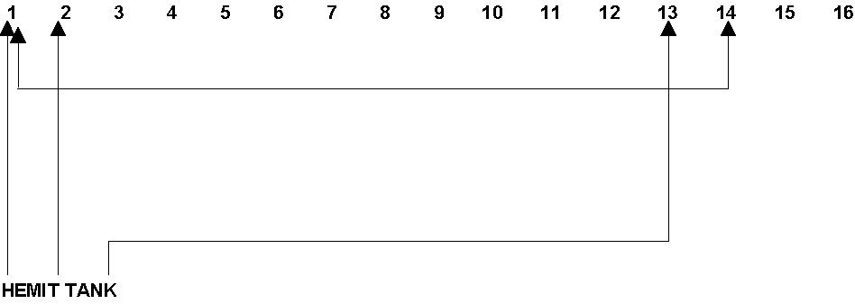
I
Table 7: ROTATION Board Indicators
| INDICATOR | COLOR | INDICATES: |
|---|---|---|
| reset | Red | board being reset or powered up |
| INV_ON | Yellow | the inverter is running |
| ds1 | Green | presence of +15 v supply |
| ds2 | Green | presence of -15 v supply |
| ds3 | Green | presence of +5 v supply |
| ds4-DS5 | Yellow | board status |
| DS6 | Neon (orange) | fan vac power supply present |
| DS7 | Neon (orange) | dc bus present |
| ELECTROCUTION HAZARD. | |
| HIGH VOLTAGE PRESENT. | |
| Do not go into generator until complete shut down of NGPDU. |
Illustration 13: PI Filter Board
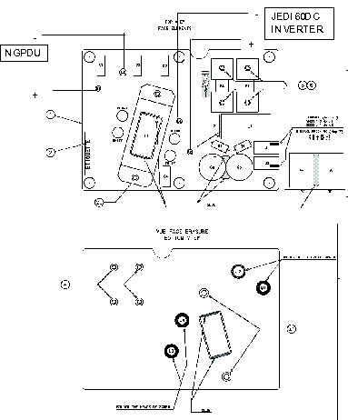
| NOTE: | For a larger version of the above illustration, click on the pdf icon below: |
Media File 8: PI Filter Board

Table 8: PI Filter Board Connectors Definition
| J1 | +DC voltage / To Gate board | U1-U2 | DC voltage / from NGPDU |
| J2 | +DC voltage / To Rotation board | U3-U4 | DC voltage / To Jedi60DC inverter |
There are no LEDs on this board.
| ELECTROCUTION HAZARD. | |
| HIGH VOLTAGE PRESENT. | |
| Do not go into generator until DS8 (neon-orange) goes out. |
| BURN HAZARD. | |
| THE RECTIFIER BRIDGE ON THIS BOARD CAN BECOME VERY HOT. | |
| Do not touch the rectifier bridge. |
Illustration 14: LVPS400 Board
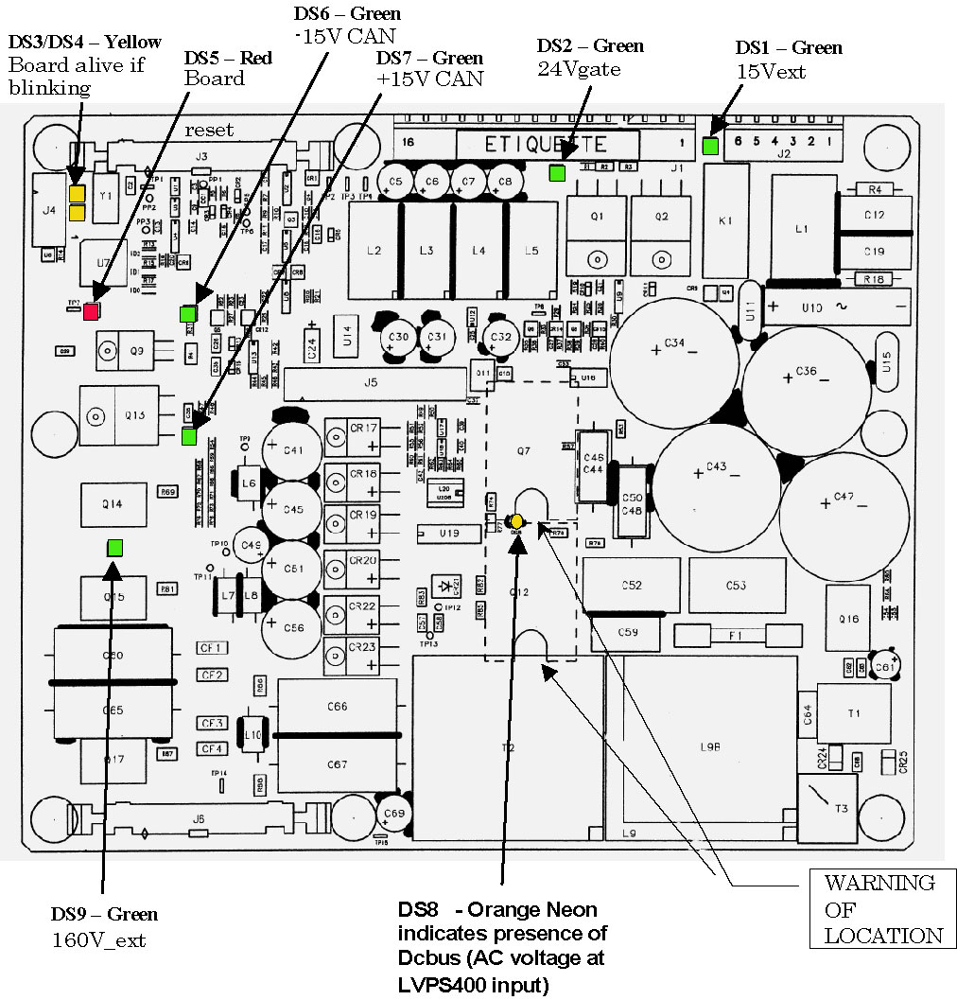
| NOTE: | For a larger version of the above illustration, click on the pdf icon below: |
Media File 9: LVPS400 Board

Board Connections:
Table 9: LVPS400 Board Connectors Definition
| J1 | Supplies output (24V fan, ...) |
| J2 | 120 VAC input |
| J3/J6 | Internal CAN and +/-15V supplies |
| J4 | TEST/ For engineering use only |
| J5 | TEST/ For engineering use only |